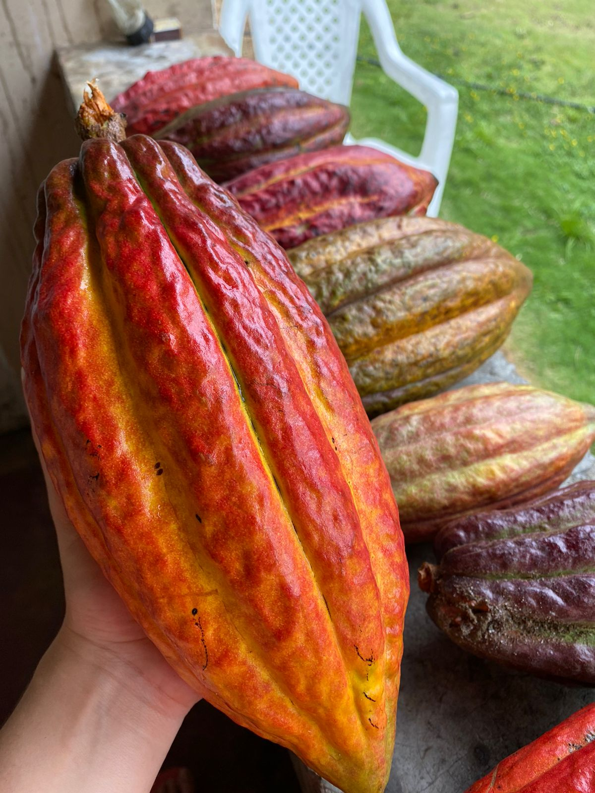
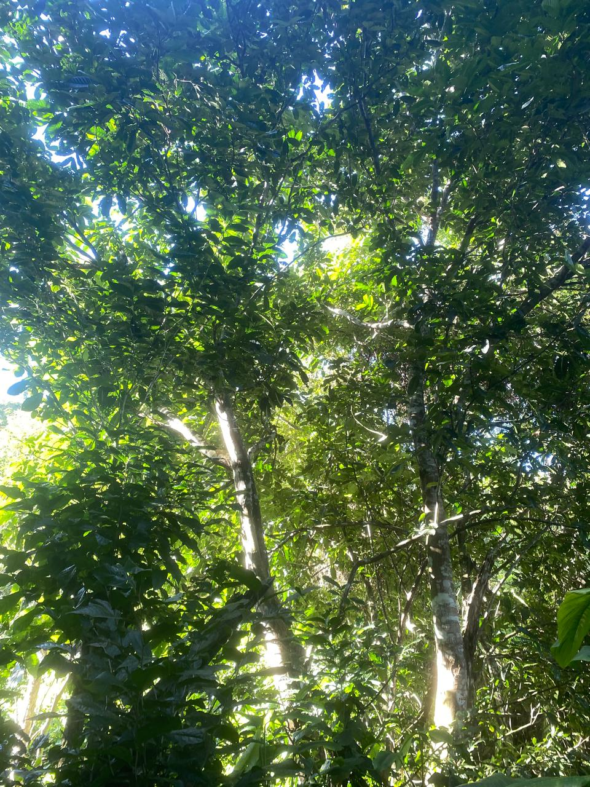
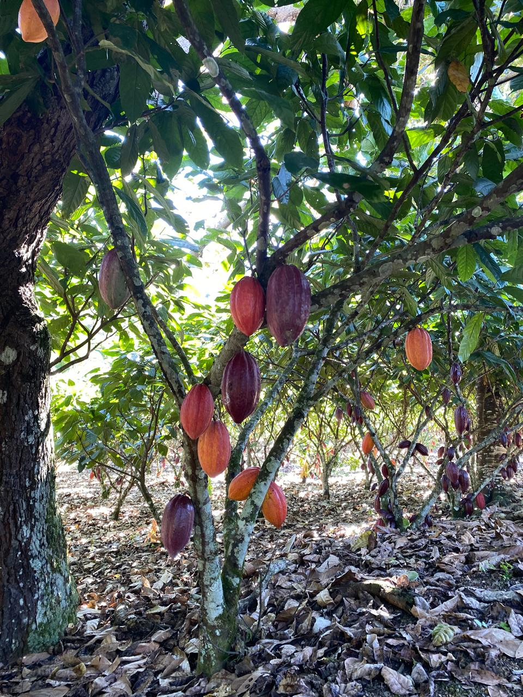
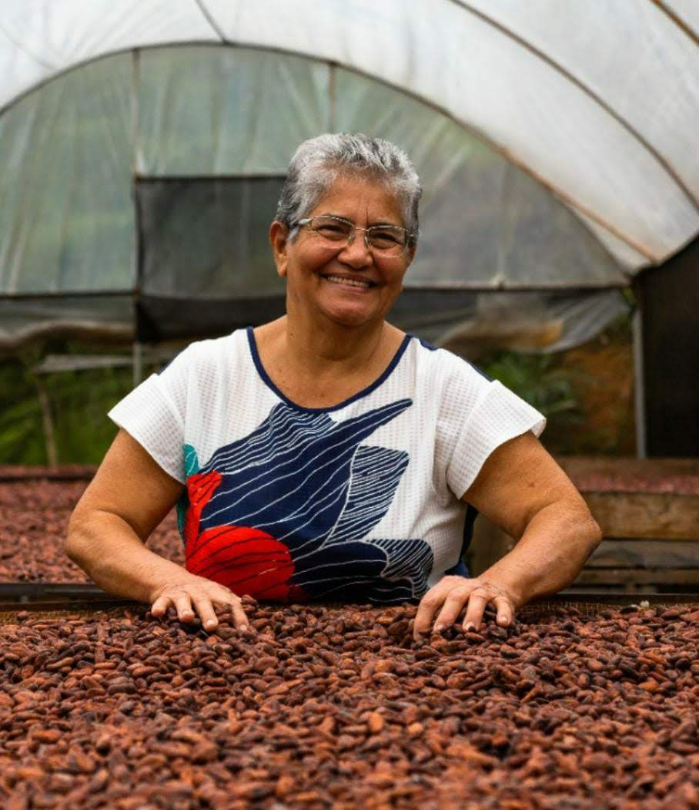
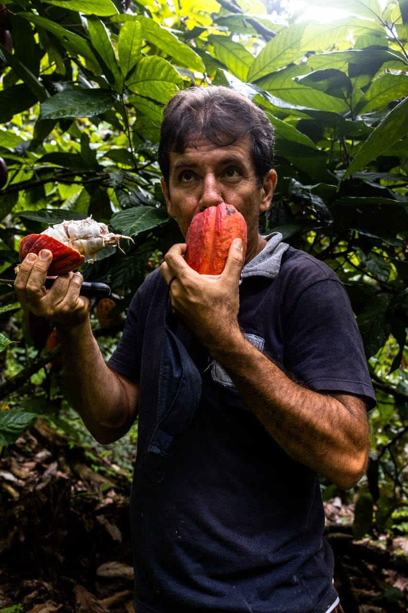
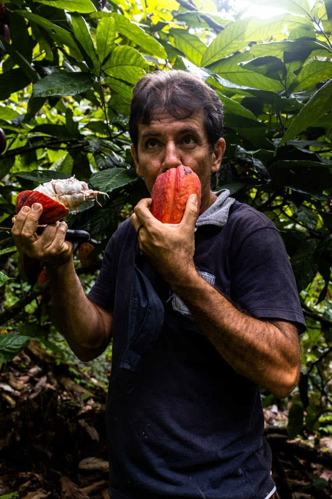
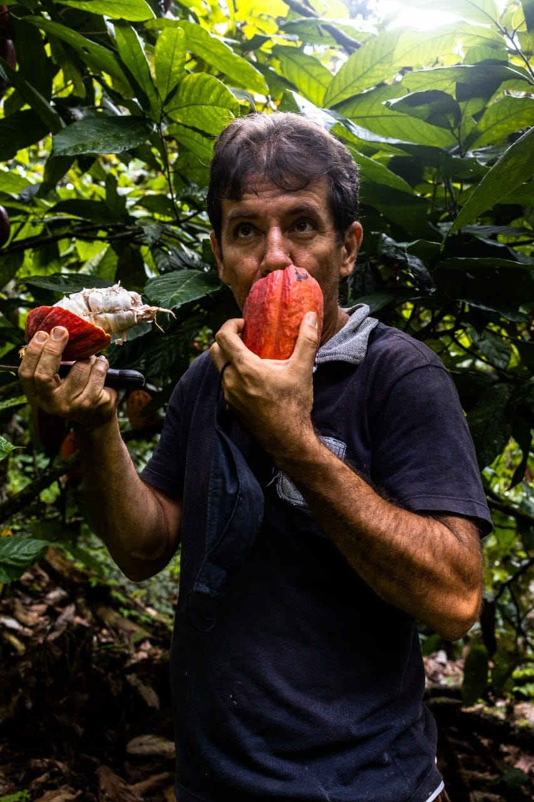
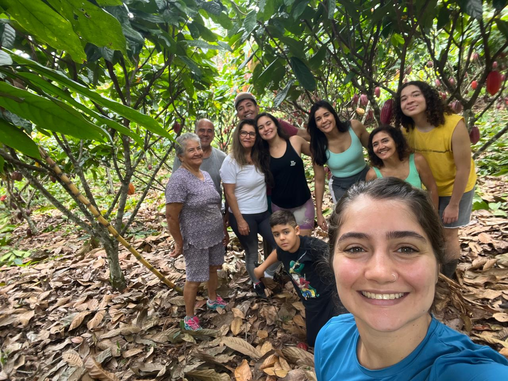
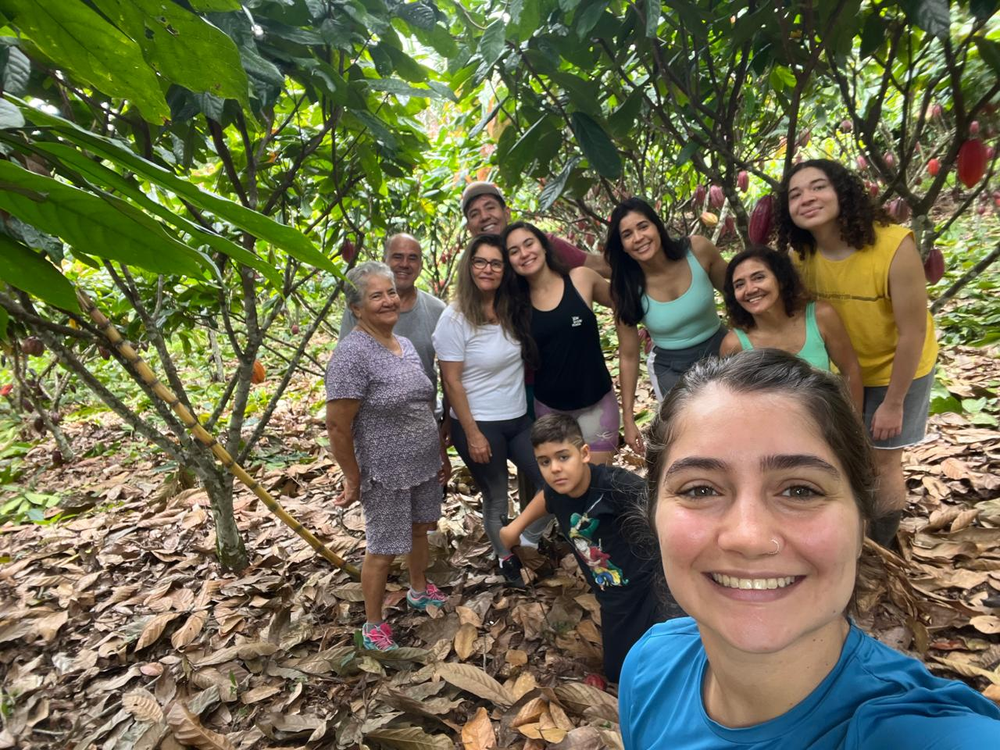

La Fazenda Nova Esperança, qui a aujourd'hui presque 60 ans, a été construite par Agostinho Almeida et est actuellement gérée par son fils, Adilson Almeida.
La ferme est spécialisée dans la production de cacao, mais dispose d'un système agroforestier multiculturel et compte plus de 30 variétés de fruits et de racines.
CACAO

Histoire du cacao
Le cacao a une histoire riche qui remonte aux civilisations anciennes d'Amérique centrale et d'Amérique du Sud. Les Mayas et les Aztèques ont été parmi les premiers à cultiver le cacao, utilisant ses graines pour préparer une boisson amère appelée "xocoatl", souvent réservée aux cérémonies religieuses et aux occasions spéciales. Avec l'arrivée des explorateurs européens, le cacao a été introduit dans le Vieux Monde, où il a rapidement gagné en popularité, en particulier lorsqu'il était sucré.
Au Brésil, la culture du cacao a commencé au XVIIe siècle, d'abord dans la région amazonienne, mais c'est à Bahia qu'elle s'est véritablement implantée. À partir du XIXe siècle, la production de cacao s'est considérablement développée, faisant du Brésil l'un des principaux producteurs mondiaux. Cette expansion a été favorisée par le système de cabruca, une technique agricole qui préserve une partie de la forêt native en intégrant les cacaoyers à la végétation existante, favorisant ainsi un équilibre écologique.
Types de cacao au Brésil
Les principaux types de cacao cultivés sont le Forasteiro, le Criollo et le Trinitário. Le Forasteiro est le plus courant, représentant environ 80 % de la production mondiale. Il est connu pour sa résistance aux parasites et aux maladies, en plus d'être plus productif. Le Criollo, bien que moins courant, est très apprécié pour son goût fin et complexe, et est considéré comme un cacao de haute qualité. Enfin, le Trinitario est un hybride de ces deux variétés, combinant la robustesse du Forastero et la qualité sensorielle du Criollo, ce qui en fait une option polyvalente et appréciée des chocolatiers.
C'est quoi la Cabruca
La cabruca est un système agroforestier traditionnel principalement utilisé pour la culture du cacao dans la région de la forêt atlantique, au sud de l'État de Bahia. Cette technique consiste à planter des cacaoyers à l'ombre de la végétation indigène, préservant ainsi une grande partie de la forêt d'origine. En préservant la couverture forestière, la cabruca favorise la biodiversité, crée un microclimat propice au développement des cacaoyers et contribue à la conservation des ressources en eau de la région.
Outre ses avantages environnementaux, la cabruca joue également un rôle important dans la protection de la faune locale, en servant d'habitat à de nombreuses espèces d'oiseaux, de mammifères et d'insectes. Cette pratique durable contribue à atténuer les effets du changement climatique, car les arbres restants contribuent à la capture du carbone.
Sur le plan économique, la cabruca valorise le cacao brésilien en offrant un produit différencié qui attire les marchés internationaux intéressés par les pratiques agricoles durables et les produits de haute qualité. Ainsi, la cabruca favorise non seulement la préservation de l'environnement, mais offre également une alternative viable aux petits et moyens producteurs de cacao, renforçant l'économie locale et garantissant la pérennité de cette tradition centenaire.

NOUVELLES
Journée du cacao à la Chambre des députés : débat sur l'importation de cacao sans réglementation et sans contrôle des parasites.
La Commission de l'agriculture, de l'élevage, de l'approvisionnement et du développement rural de la Chambre des députés a tenu, le 15 octobre, une audience publique pour discuter des risques directs causés par les changements apportés aux règles d'importation des amandes de cacao.
L'objectif était de débattre de l'instruction normative 125/21, qui a abrogé l'exigence phytosanitaire pour l'importation d'amandes de cacao provenant de Côte d'Ivoire. La norme a supprimé l'exigence de traitement au bromure de méthyle, un produit utilisé pour lutter contre les parasites agricoles courants en Afrique.
Domingos Sávio, député qui a demandé la tenue de cette session, ainsi que des spécialistes de la culture du cacao, alertent sur le fait que les parasites africains peuvent contaminer les plantations au Brésil, voire d'autres cultures. Pour le député, il est nécessaire de débattre de cette question afin de garantir la durabilité et la compétitivité de la culture nationale du cacao.
« Il est essentiel de débattre des conséquences directes de l'instruction normative 125/21 sur le secteur, afin d'assurer la protection de la production brésilienne et la sécurité phytosanitaire des cultures de cacao », affirme-t-il.
Source : Agência Câmara de Notícias.

PHOTOS


QUI SOMMES-NOUS
Je m'appelle Juliana Almeida et je suis la petite-fille d'Agostinho Almeida. Toute ma famille vient de l'intérieur de l'État de Bahia et tous, sauf moi, vivent dans la ville de Jequié, BA. La ferme se trouve dans le sud-ouest/sud de l'État et c'est notre passion. Cueillir du cacao, des papayes, du manioc, des cajous, des mandarines, des citrons, des bananes et des noix de coco sont des tâches habituelles lorsque nous nous y rendons.
C'est une joie de pouvoir profiter de cet espace si diversifié et si spécial.


 

 
